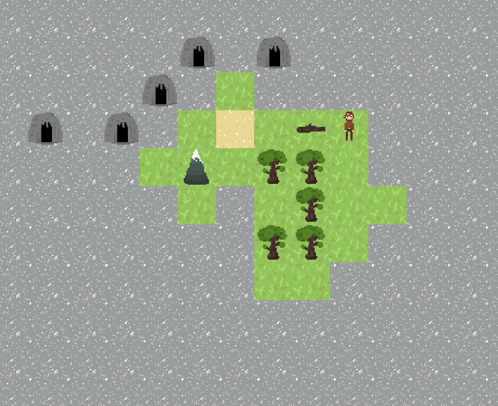
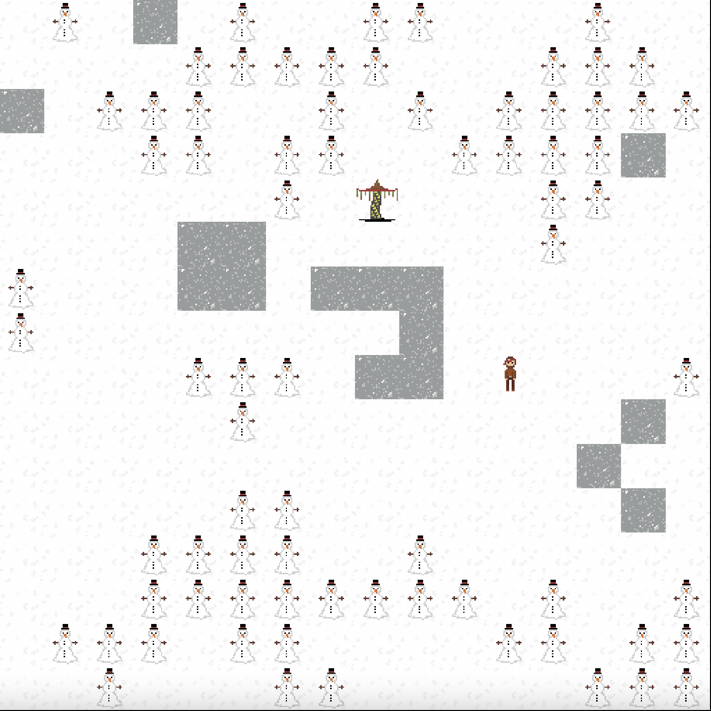
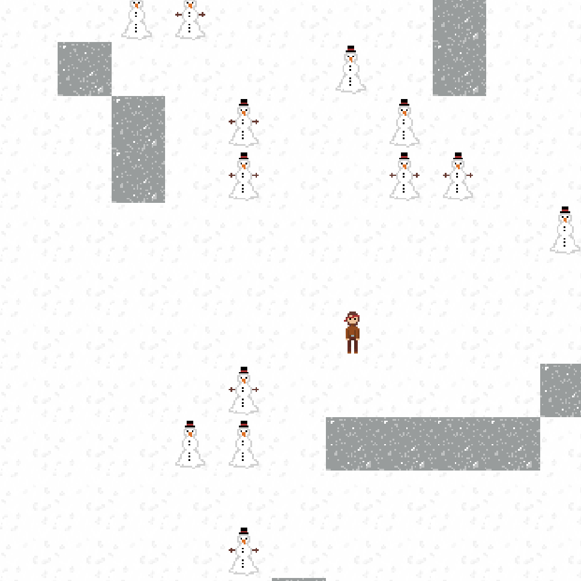
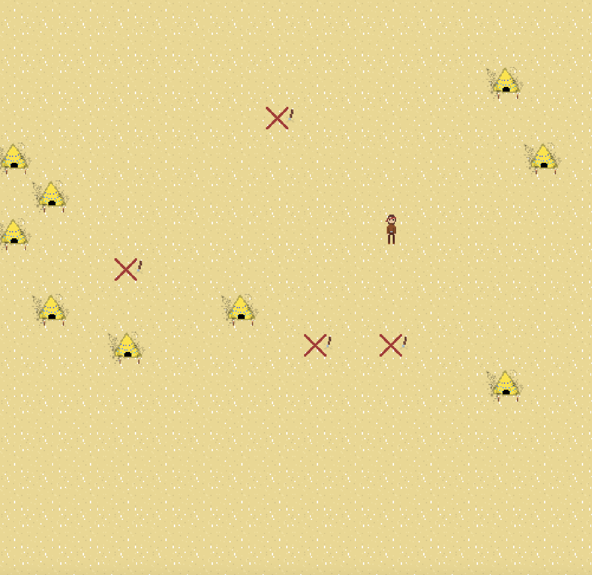
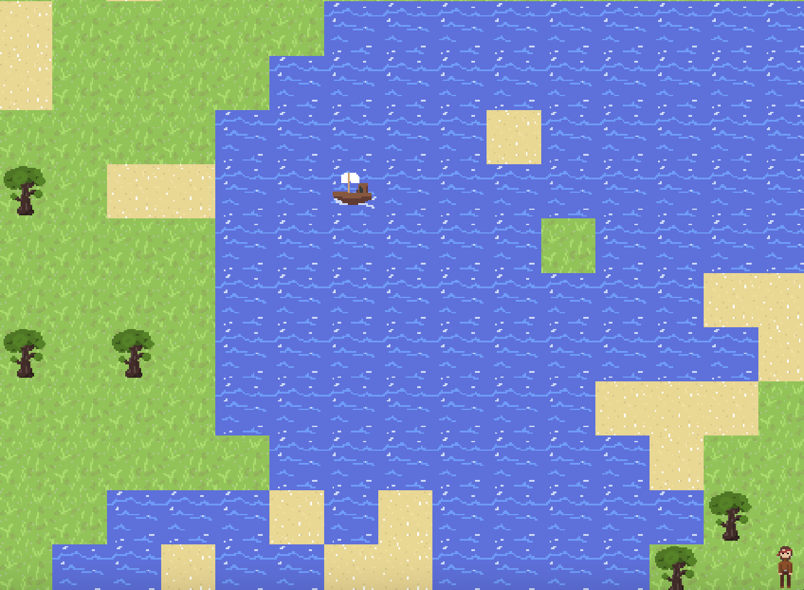
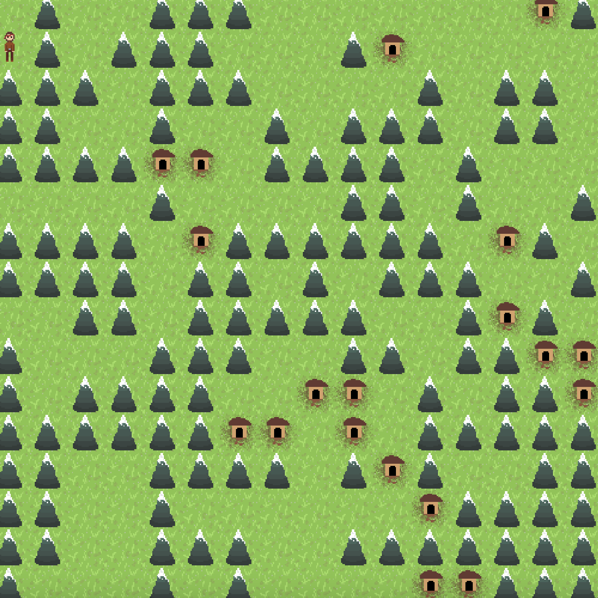
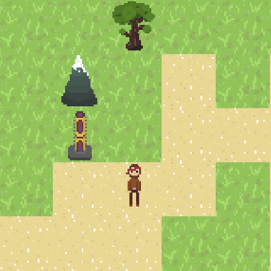
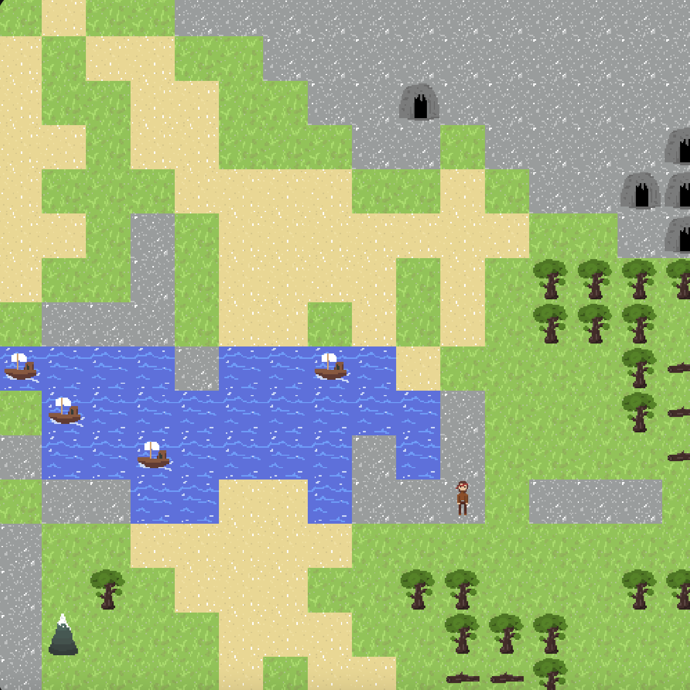

Things to Find
Structures
There are a handful of structures to find across Mutablus. Some are fairly common while others are tougher to find. Here is a complete list of each structure and where to find it:
- House - usually found near mountains. Houses are fairly common and can appear by themselves or in rare mountain cities. They only crop up in grassy areas and contain workbenches (needed to craft shovels). 
- Cave - a common small structure. Caves appear in stoney areas, typically in groups of 3 or more. Each cave has a small number of picks for you to collect.
- Boat - an abandoned ship. They appear on the water, sometimes docked in a small pool. Boats are uncommon and contain nothing of value.
- Pyramid - home of the pharoah. Pharoahs offer orbs in exchange for idols and ore. Pyramids are uncommon and appear exclusively in sandy areas. 
- Tower - the rarest structure in Mutablus. Towers offer free orbs, making them a much easier alternative to gathering ore for pharoahs. Towers are rare, appearing only in snowy areas.
Biomes
Mutablus hosts a variety of biomes. Here are some fun ones to keep an eye out for:
-

- Field of Snowmen - pay attention! Some are missing their arms and could use a hand.
- Mountain Range - like a forest, but wih big, annoying mountains instead of trees. Good luck getting through. 
- Necropolis - a desert dotted with pyramids and dig sites.
- Stone Forest - water has started pooling in the stone here. Grass grew and caves formed. 
- Ocean - a large body of water, often with boats.
- True Desert - a full screen of sand. That's it. 
- Mountain City - the rarest biome in Mutablus. Mountain cities are home to loads of houses and mountains. They are extremely difficult to navigate without picks, so come prepared!


Points of Interest
These are some miscellaneous fun things that you can find in the world. Keep an eye out!
- Dig Site - found in sandy areas. Dig sites can be excavated with a shovel to get an idol. 
- Totem - ancient, headless artifact. Place an idol atop it to be showered in tools.
- Loveboats - they sail side by side. 
- Fleet - if 2 boats isn't enough, look for a fleet!